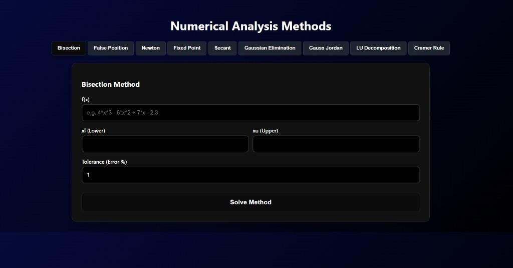
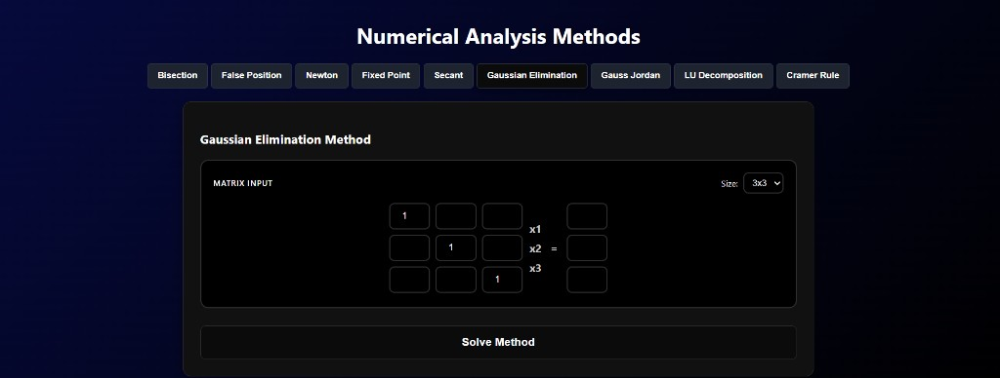

Academic · Interactive tool
Numerical Analysis Methods
A dark-themed web app that solves root-finding and linear-system problems: Bisection, False Position, Newton, Fixed Point, Secant, Gaussian Elimination, Gauss Jordan, LU Decomposition, and Cramer’s Rule — with live inputs for functions, bounds, tolerance, and matrix size.


How the methods behave
Interactive demos of interval narrowing and iteration error — the same ideas the solver implements.
Error drops quickly as Newton iterates toward the root.